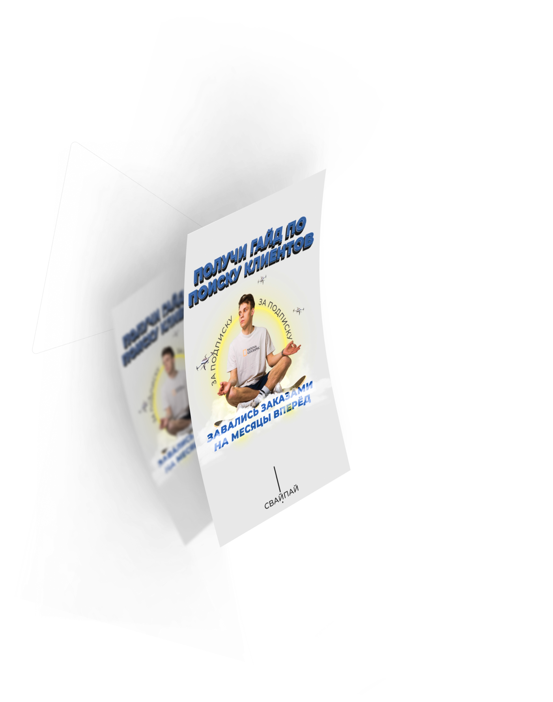

<section class="lead-magnet">
	<div class="lead-magnet__container container">
		<h2 class="lead-magnet__heading main-heading">Как с помощью Client Turbine увеличить эффективность таргетировнной рекламы в 3-4 раза?</h2>
		<div class="lead-magnet__block">
			<div class="lead-magnet__image">
				
			</div>
			<div class="lead-magnet__info">
				<p class="lead-magnet__text">Самым эффективным инструментом для увеличении конверсии в подписку является лид - магнит.</p>
				<h3 class="lead-magnet__list-heading">Варианты лид - магнита </h3>
				<ul class="lead-magnet__list list-reset">
					<li class="lead-magnet__item">Чек-лист</li>
					<li class="lead-magnet__item">Гайд</li>
					<li class="lead-magnet__item">Мануал</li>
					<li class="lead-magnet__item">Видеоурок по теме, о чем вы ведёте блог</li>
				</ul>
				<div class="lead-magnet__image lead-magnet__image--hidden">
					

				</div>

				<blockquote class="lead-magnet__quote">
					"Хороший лид-магнит бьет точно в цель запроса пользователя и работает как неожиданная услуга или щедрость: в нем много заботы и концентрированной пользы"
				</blockquote>
			</div>
		</div>
		<div class="lead-magnet__notification-wrap">
			<p class="lead-magnet__notification">
				Ценность сервиса в том, что вам не нужно в ручную проверять подписку на аккаунт и после этого отправлять каждому пользователю лид-магнит.
			</p>
		</div>
	</div>
</section>